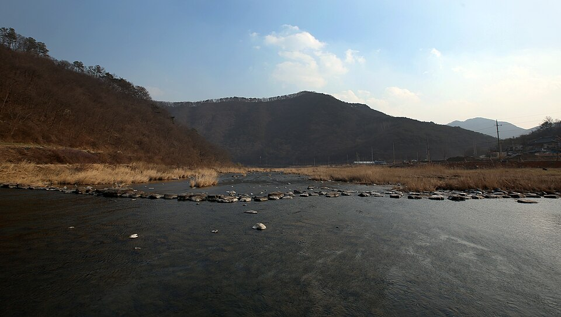

임실 검정고시 — 대학까지 생각한다면 합격 점수보다 먼저 정할 것

고졸 검정고시만 놓고 보면 목표는 단순합니다. 전 과목 평균 60점. 그런데 그 뒤에 대학을 생각하고 있다면 이야기가 달라집니다. 같은 검정고시라도 어느 길로 대학에 갈지에 따라 목표 점수와 공부 순서가 바뀌기 때문입니다. 임실(임실군) 검정고시를 준비하면서 대학까지 내다보는 분들이 처음에 정해 두면 좋은 것들을 정리했습니다.
수시인지 정시인지, 방향부터 정합니다
검정고시로 고졸 학력을 갖추면 수시와 정시 모두 지원할 수 있습니다. 수시에서는 내신 대신 검정고시 성적을 반영하는 대학이 많고, 정시는 수능 성적으로 지원합니다. 어느 쪽에 무게를 두느냐에 따라 검정고시를 대하는 태도가 달라집니다.
아직 정하지 못했다면 그것도 괜찮습니다. 다만 "합격하고 나서 생각하자"로 미루면, 수시를 생각했을 때 필요한 점수를 이미 지나쳐 버리는 경우가 생깁니다. 처음부터 두 길을 모두 열어 둔다는 생각으로 준비하는 편이 안전합니다.
수시를 생각한다면 60점은 목표가 아닙니다
검정고시 성적을 내신처럼 쓰는 전형에서는 점수가 곧 경쟁력입니다. 60점 합격선은 출발점일 뿐이고, 대학과 전형에 따라 훨씬 높은 점수가 필요할 수 있습니다. 그래서 수시를 염두에 둔다면 과목마다 고르게 높은 점수를 목표로 잡고, 약한 과목을 다른 과목으로 메우는 전략은 피하는 게 좋습니다.
또 하나, 이미 합격한 과목이 있어도 점수를 올리려고 다시 응시하는 경우가 있습니다. 이때 성적을 어떻게 반영하는지는 대학마다 다르니, 재응시 여부는 지원할 대학의 모집요강을 보고 정해야 합니다.
정시를 생각한다면 수능 공부를 언제 겹칠지
정시로 간다면 검정고시는 빨리, 확실하게 끝내고 수능에 시간을 쓰는 것이 핵심입니다. 국어·수학·영어는 검정고시와 수능이 겹치는 부분이 있어서, 검정고시 준비 단계부터 수능 기초를 함께 다지는 방식이 효율적입니다. 반대로 검정고시 범위에만 맞춰 공부하면, 합격 후 수능 준비를 다시 처음부터 시작하는 느낌이 들 수 있습니다.
모집요강은 미리, 그리고 직접 확인합니다
검정고시 출신의 지원 자격과 성적 반영 방법은 대학·전형·연도마다 다릅니다. 주변에서 들은 이야기나 몇 년 전 정보만 믿고 계획을 세우면 안 됩니다. 관심 있는 대학이 몇 곳 생기면 그 대학 입학처의 모집요강을 직접 확인하는 습관을 들이세요. 학생부종합전형처럼 학교생활 기록을 중요하게 보는 전형은 검정고시 출신에게 불리하거나 지원이 제한될 수 있다는 점도 함께 살펴야 합니다.
임실에서 이렇게 함께합니다
저희는 1:1 맞춤 과외라 합격만이 아니라 그다음 진학 계획까지 같이 놓고 공부 순서를 짭니다. 임실읍을 비롯해 오수면·관촌면·강진면·신평면 등은 방문 수업이 가능하고, 이동이 부담되면 화상(줌) 수업으로 같은 흐름을 이어 갑니다.
관련 검색어: 임실검정고시 · 임실검정고시과외 · 임실군검정고시과외 · 전북임실검정고시 · 임실검정고시대학진학